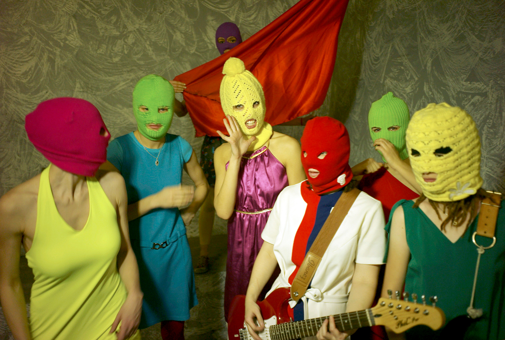
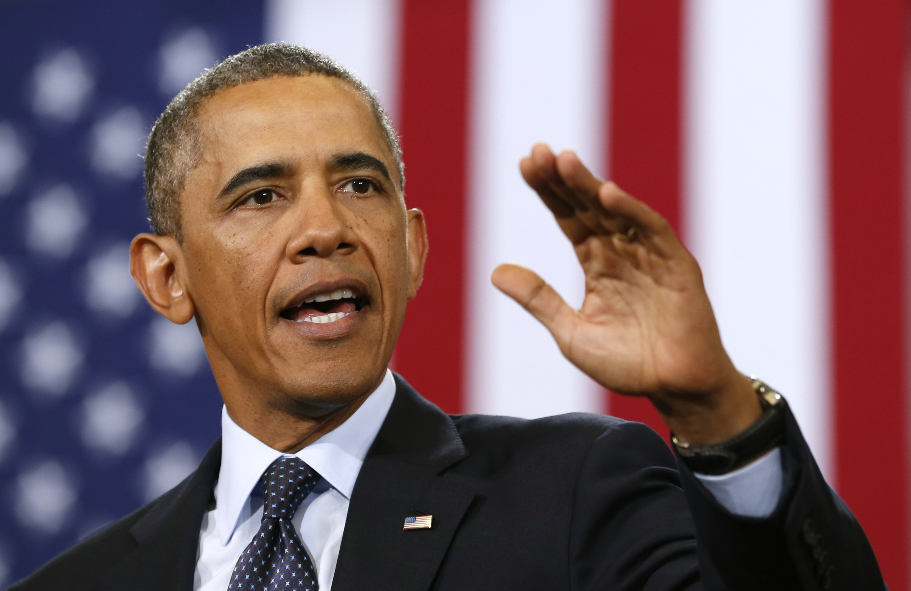
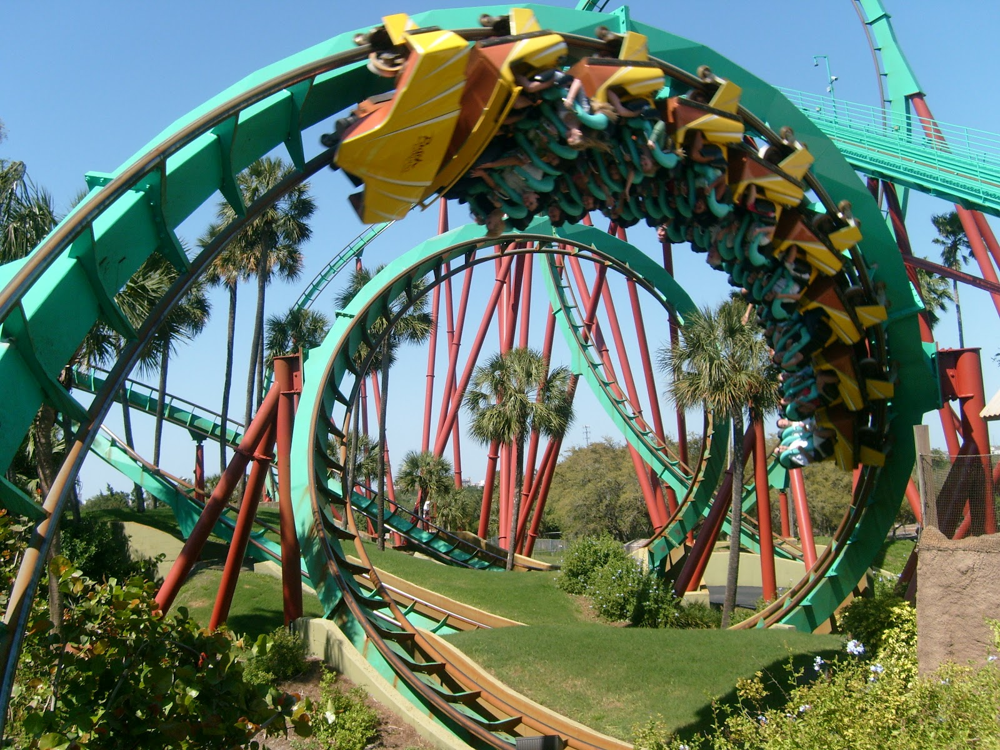
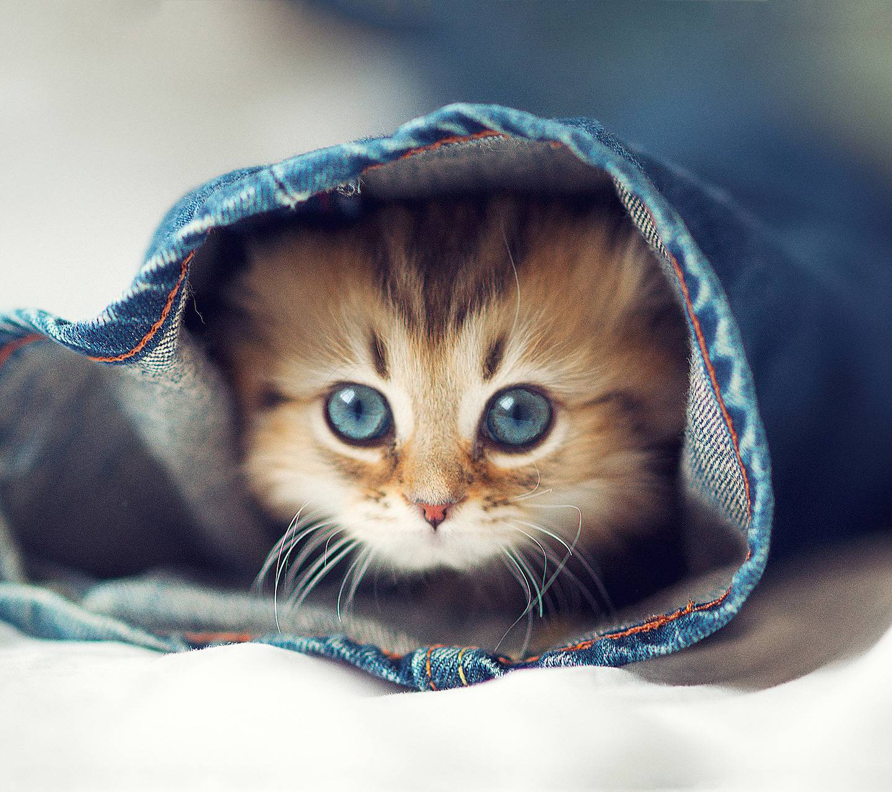

Onder het Oppervlak
De relatie tussen intuïtie en creativiteit
Voorwoord
Ik heb nu bijna 8 jaar grafisch ontwerpen gestudeerd. Eerst op het Mediacollege Amsterdam, daarna op de KABK. Vanaf het moment dat ik merkte dat ik echt passie voor het vak kreeg, maakte ik ook kennis met een voor mij nog onbekend fenomeen: vast zitten. Als ik bedenk hoe vaak ik met mijn handen in het haar heb gezeten, terwijl mijn kop bijna uit elkaar barstte van frustratie, zonder enig uitzicht op een mogelijke oplossing, is dat een confronterend gegeven. Ik vraag mij dan af of dat bij mij hoort, of dat ik nog steeds moet leren om mijn gedachten open te kunnen zetten.
Het is voor mij een welbekend maar zeldzaam gevoel, dat ik even het idee heb dat alles kan lukken. Dat mijn gedachten razendsnel, effectief maar vooral optimistisch door mijn hoofd schieten. Dat voelt als een explosie van energie, een bruisend gevoel van top tot teen, met trillende handen en drang om het ideeof beeld dat zit opgesloten in mijn hoofd te verwezenlijken.
Dat kan het resultaat zijn van:
- Een gesprek over een project met een docent of klasgenoot
- Bevestiging dat ideeën waar ik over twijfel goed zijn
- Een theoretische vondst
- Een visuele vondst/verrassing
- Een boeiende inspiratiebron (vaak een documentaire over iemand zijn werkwijze)
- Uitschrijven wat er in mijn hoofd in de knoop zit
Op de academie is mij vaak verteld dat ik een intuïtief persoon ben en dat ik het best gevoelsmatig te werk kan gaan. Rationeel denken lijkt mij moeilijker af te gaan. Althans, ik heb het gevoel dat ik soms op de verkeerde momenten blijf vast zitten in rationeel denken, terwijl ik op dat moment volkomen op mijn intuïtie af zou moeten gaan.
Inleiding
In mijn scriptie wil ik het ontwerpproces onderzoeken. Daarbij focus ik op de balans tussen het rationeel denken en intuïtie. Mijn doel is om het tastbaar te maken voor mijzelf, zodat ik mij meer bewust kan zijn van mijn creatieve proces. Ik begin met het analyseren van mijn eigen probleem: het vast zitten. Hoewel ik er al jaren mee zit, ben ik er nooit eerder zo bewust mee bezig geweest. Als toeschouwer van mijzelf wil ik ‘vast zitten’ tot op de bodem analyseren. Wellicht leidt dit al tot nieuwe inzichten. Hoofdstuk 1 baseer ik volledig op mijn eigen ervaringen die ik heb gehad tijdens opdrachten op en buiten de academie.
Om mijn eigen ervaringen in een kader te zetten beschrijf ik in hoofdstuk 2 theorieën over het creatieve proces. In hoofdstuk 3 beschrijf ik hoe ontwerpers maar ook filosofen, kunstenaars en wetenschappers gesproken of geschreven hebben over intuïtie. Wat zijn hun opvattingen over dit onderwerp? Hoe hebben zij hun intuïtie benut? Kunnen zij verklaren hoe bepaalde ideeën tot stand zijn gekomen? In hoofdstuk 5 focus ik op de praktijk van ontwerpers.
Onderzoeksvraag:
Hoe kan ik mijn intuïtie optimaal benutten in het ontwerpproces?
1. Vastzitten
Laat ik beginnen bij de aanleiding van mijn scriptie:
mijn grote valkuil van de afgelopen jaren, het vast zitten. Ik weet dat ik niet de enige ben die hier ervaring mee heeft. Veel van mijn medestudenten hebben hier door de jaren heen ook veel mee te maken gehad. Ik wil deze, soms onvermijdelijke fase van het ontwerpproces onderzoeken. Wat mij is opgevallen is dat ik vaak langer blijf hangen in deze fase dan mijn medestudenten.
Mijn onderzoeksvragen voor dit hoofdstuk luiden:
Wat gebeurt er en hoe gebeurt het?
Wat gebeurt er?
Veel studenten werken vol passie aan projecten en opdrachten. Ondanks die passie zie ik velen in de fase terecht komen waarbij ze vast komen te zitten. Blijkbaar is passie geen garantie om soepel door het ontwerpproces te komen.
Ik heb vaak het gevoel dat ik beter kan dan wat ik daadwerkelijk presteer. Er zijn weinig projecten die ik op de academie gemaakt heb die ik echt als ‘af’ beschouw. Mijn eindresultaten hebben te lijden gehad onder het tijdverlies door het vastzitten. Vaak kijk ik daarom aan het eind van een project toch met enige onvrede naar mijn gemaakte werk. Ondanks dat medestudenten ook veel vastzitten zie ik dat zij meestal toch een brug weten te slaan die ze tot een overtuigend eindresultaat weet te leiden.
De fase van het vastzitten kenmerkt zich als het verdwalen tijdens het zoeken naar oplossingen. Mijn ervaring is dat het zoekproces niet of te weinig leidt tot oplossingen. Ik zie anderen in deze fase meestal sneller komen tot inzichten. Dit roept de vraag op hoe dit zoekproces bij mij en anderen verloopt.
Ik heb vaak de neiging gehad om ideeën of schetsen niet eens uit te werken of op papier te zetten. Want ik dacht bij voorbaat al dat ze niet goed genoeg zouden zijn. Je zou dit kunnen zien als dat ik niet eens durfde te beginnen met zoeken.
In hoeverre is zelfkritiek een positieve of negatieve factor bij het zoeken naar oplossingen? Zelfkritiek kan leiden tot oplossingen van een hoog niveau. Het vormt een filter voor oplossingen van lage kwaliteit. Teveel zelfkritiek resulteert in onvoldoende ruimte voor theoretische en beeldende ideevorming. Dit is een symptoom van faalangst. Tot in de tweede klas van de KABK had ik mij nooit gerealiseerd dat ik last had van faalangst. In het vierde jaar merk ik dat ik hier inmiddels minder last van heb. Ik durf te zoeken en ik weet te vinden. Maar is dit genoeg?
In het vastzitten merk ik nog een ander aspect wat wellicht nog belangrijker is. Het vak grafisch ontwerpen gaat over het ordenen en verduidelijken van informatie op een estethisch verantwoorde manier. Juist dat ordenen en verduidelijken gaat mij niet gemakkelijk af. Ik ben geen analytisch denker.
Hoe gebeurt het?
Er zijn een aantal redenen die er toe kunnen leiden dat ik vastloop.
1. Een overvloed aan informatie en keuzes maken
Bij het verzamelen van informatie voor een project, verzamel ik soms zo veel, dat ik er moeilijk structuur in kan houden. Dan raak ik helemaal de draad kwijt en kan ik niet meer focussen op datgene waar ik naar op zoek ben. Niet alleen theoretisch is dit een probleem. Ook bij het creëren van beeldende opties voor een project genereer ik voor mezelf opnieuw een stortvloed aan informatie. Hoe meer opties ik maak voor mijzelf, hoe minder makkelijk ik kan bepalen wat het beste werkt. Nu ik dit aan het observeren ben, vind ik het interessant om te merken dat dit ook te maken heeft met analytisch denken.
2. Het reflecteren op communicerende kwaliteiten
Ik ben veelal iemand die geboeid kan zijn door vorm, kleur of andere esthetische eigenschappen. Bij typografie observeer ik meestal het beeld dat de typografie vormt, in plaats van de boodschap. Ik word bij muziek het meest gegrepen door melodie, sfeer en energie. Bijna nooit door de tekst. Tekst vraagt om analyse. Ik ben iemand die communicatie op gevoelsmatig niveau tot zich neemt in plaats van analytisch. Zou dit kunnen verklaren dat ik beeldend een stuk sterker ben dan communicerend?
3. Inspiratiebronnen teveel als voorbeeld nemen
Het zien van het werk van andere ontwerpers kan heel inspirerend werken. Maar het kan ook belemmerend zijn en leiden tot teveel zelfkritiek. In veel werk van mijn inspiratiebronnen zie ik een bepaalde vrijheid. In plaats van dat ik mij laat inspireren door die vrijheid is dat juist datgene dat mij jaloers maakt, niet persé het werk zelf. Een logisch gevolg van teveel naar andermans werk kijken is dan dat ik mijn eigen denken te weinig ruimte geef.
2. Het creatieve proces
Om mijzelf bewust te worden van mijn eigen creatieve proces heb ik twee theorieën onder elkaar gezet waarop ik vervolgens reflecteer.
Roger Von Oech - Explorer, Artist, Judge & Warrior
Een interessant perspectief om het ontwerpproces te benaderen zijn de vier rollen die Roger Von Oech beschrijft in zijn boek A Kick in the Seat of the Pants: Using Your Explorer, Artist, Judge, and Warrior to Be More Creative (1986). Hij maakt onderscheid in de volgende vier rollen: the Explorer, the Artist, the Judge & the Warrior1. Door jezelf in deze rollen te verplaatsen kan je het ontwerpproces bewuster beleven en effectief op zoek gaan naar de dingen die je nodig hebt op dat moment.
The Explorer, De eerste gedaante waarin de creatieveling zich waant in het ontwerpproces. The Explorer gaat op onderzoek uit met een oneindige nieuwsgierigheid. Het betreffende onderwerp wordt tot op de bodem uit gezocht. Je kan het ook wel het zoeken naar grondstoffen voor het ontwerp noemen. Er worden feiten, concepten, ervaringen, kennis en gevoelens verzameld die zouden kunnen bijdragen aan de fantasie van The Artist.
De speelse en creatieve rol wordt vervuld door the Artist. The Artist gaat op intuïtieve wijze te werk en maakt gebruik van de grondstoffen die the Explorer verzameld heeft. Door met die gevonden informatie te spelen komen er nieuwe betekenissen die tot ideeën leiden. The Artist experimenteert met vorm, media, techniek en materiaal zonder zich daarbij zorgen te maken over de kwaliteit van zijn bevindingen.
The Judge, bekijkt het werk van the Artist op een rationele manier en reflecteert op de kwaliteit er van. Is het uitvoerbaar? Is het praktisch? Communiceert het de gewenste boodschap? The Judge is diegene die de knoop doorhakt en het beste idee van the Artist er uit pikt.
Als laatste onderdeel van het proces zal the Warrior het concrete idee van the Judge overnemen om het tot in detail uit te werken tot een eindresultaat. Het is de taak voor the Warrior om weerstand te voorkomen en het idee vast te houden.
Graham Wallas - The Four Stages of Creativity
Graham Wallas, een Engelse sociaal psycholoog, schreef het boek The Art of Thought (1926). Hier in beschrijft hij op basis van zijn eigen observaties en ervaringen van uitvinders en geleerden de vier onderscheidende fases in het creatieve proces. Hij noemde ze: voorbereiding, incubatie, illuminatie en verificatie2.
Voorbereiding
Tijdens de voorbereidende fase wordt het probleem onderzocht vanuit elk mogelijk perspectief. Het hoofd wordt gevoed met zo veel mogelijk informatie die kan worden omgezet in nieuwe ideeën. Dit gehele proces verloopt op bewust denkniveau. Het is een manier om in de juiste stemming te komen voor een project.
Incubatie
Op de voorbereiding volgt een minder tastbare fase die zich grotendeels afspeelt in het onbewuste denkproces, de intuïtie. Er wordt niet directe inspanning uitgeoefend op het probleem. Dit kan moeilijk zijn, aangezien je niet bewust met het probleem bezig bent. Toch spelen er zich wel degelijk onbewuste mentale gebeurtenissen af in dit stadium. Hij schrijft hier over:
‘‘vrijwillige onthouding van het bewuste denken over elk probleem kan twee vormen aannemen: hetzij in het bewuste mentale werk aan andere problemen, of in een versoepeling van al het bewuste mentale werk. De eerste vorm van incubatie bezuinigt tijd en is dus vaak beter.’’
‘‘We kunnen vaak meer resultaten boeken door te beginnen met meerdere problemen in successie en deze vervolgens onafgemaakt te laten liggen, terwijl we ons richten op andere. Dit werkt beter dan elk probleem op te proberen lossen in één zit.’’ 1
Hij stelt dus dat het actief houden van de gedachten een grote bijdrage kan leveren aan vooruitgang in onbewuste denkprocessen. Dit heeft meer effect dan wanneer je je gedachten volledig rust geeft.
Illuminatie
De illuminatie is de flits van inzicht. Het is het moment dat alle puzzelstukjes in elkaar lijken te vallen. Deze fase vormt de synthese van actie-reactie van de eerste twee fases. Het bewustzijn kon niet zonder de bewuste onthouding en omgekeerd was het moment van inzicht nooit ontstaan zonder de rationele eerste fase. Wallas vertelt hier over dat deze fase absoluut niet geforceerd kan worden. Dat het een ‘flits’ is waar we geen enkele invloed op hebben omdat deze tot stand komt door een tijdelijke reeks van psychologische gebeurtenissen. Aan de andere kant is de ‘flits’ of ‘klik’ het resultaat van een succesvolle trein van associaties.
Verificatie
De laatste fase deelt in tegenstelling tot de tweede en de derde fase het rationele aspect van de voorbereidende fase. De verificatie gaat over het bewust reflecteren op wat de middelste twee fases voort hebben gebracht. Zoals Wallas zelf vertelt: Het gebeurt nooit dat onbewust werk kant en klare producten voortbrengt.
Roger Von Oech vs. Graham Wallas
De vier rollen en de vier fases van Roger Von Oech en Graham Wallas komen op een aantal vlakken sterk met elkaar overeen. De vier rollen zou je ook kunnen zien als vier fases en visa versa. Wat mij opvalt is dat de beschrijving van Von Oech herkenbaar is voor mij. Die stappen lijken concreter en uitvoerbaar. Hij schreef gericht over het ontwerpproces terwijl Wallas het over creativiteit in het algemeen had.
The explorer en de fase van voorbereiding zijn praktisch hetzelfde. Het gaat beide over onderzoeken, het probleem leren kennen, waarneming vanaf verschillende perspectieven en het verzamelen van ideeën.
De tweede fase is bij de theorie van Von Oech een puur artistieke fase. Het gaat over grenzeloosheid, spelen en proberen zonder al te veel bij na te denken. De theorie van Wallas beschrijft de tweede fase juist als een soort rustperiode. Of juist een periode waarin sterk wordt gefocust op andere ‘problemen’. Het gaat in ieder geval over het laten inzinken van alle vergaarde informatie en je niet bewust bezig houden met hetzelfde. Dit zijn duidelijk verschillende benaderingen waarbij je bij de ene je hersenen actief gebruikt om spelenderwijs tot nieuwe inzichten te komen terwijl je bij de ander vertrouwt op onderbewuste processen.
Bij de derde fases gebeurt iets opvallends. The Judge is een soort filtering van het werk van the Artist. Een fase waarin het plan concreet wordt gemaakt en regels worden vast gesteld. De Illuminatie fase van Wallas loopt eigelijk, als we het over het ontwerpproces hebben, een stap achter op the Artist. De Illuminatie fase zou je kunnen zien als een fase die in de rol van the Artist afspeelt. Net zoals dat de Verificatie een fase is in de rol van the Judge. Het grote verschil tussen beide theorieën is dat de theorie van Wallas een fase erkent waarbij de informatie en kennis inzinkt. Een onbewuste periode, waarin dus niet actief wordt gehandeld. In tegenstelling tot het actieve en intuïtieve karakter van the Artist. In de theorie van Wallas zit dus geen fase die overeenkomt met de productie gerichte rol van the Warrior.
Hoe dan ook is het leerzaam om je bewust te zijn van deze verschillende opvattingen over het creatieve proces. Ik voel dat ik zo scherper in het proces kan staan en wellicht meer oplossingsgericht te werk kan gaan.
3. Intuïtie
Intuïtie is een begrip waar niet al te zuinig mee om wordt gegaan door grafisch ontwerpers, beeldend kunstenaars, muzikanten, wetenschappers, uitvinders etc. Eigenlijk alle creërende beroepsmensen hebben het er vroeg of laat wel eens een keer over hoe zij hun intuïtie gebruiken om tot hun beste ideeën en resultaten te komen. Ik verzamel verschillende verhalen, theorieën en opvattingen van ontwerpers over dit onderwerp. Ook ben ik benieuwd wat kunstenaars, filosofen en wetenschappers er over zeggen.
Definities van intuïtie
Intuïtie
de intuïtie zelfst.naamw. (v.) uitspraak: [ɪntyˈwi(t)si] Verbuigingen: intuïtie|s (meerv.) eigenschap dat je iets aanvoelt zonder erover te denken
Intuïtie
Onmiddelijk als bij ingeving verkregen inzicht in het wezen van de dingen. Het is een manier van kennen die volstrekt buiten het begripsmatige denken en het stap voor stap redeneren om gaat.
Intuïtie
(psych.) vorm van begrijpen die niet op redenering, ervaring of weten berust.
Ontwerpers over intuïtie
Paula Scher
De Amerikaanse grafisch ontwerpster Paula Scher, geboren in 1948, Washington D.C, beschrijft haar intuïtie als een gokkast tegenover een computer. In één helft van haar hersenen heeft ze stapels aan verzamelde informatie; boeken, films, kunst, inspirerende gesprekken. Alles dat ze ooit heeft gekocht, afgewezen, geliefd, gehaat. Het zit allemaal aan één kant van de hersenen. In de andere hersenhelft zit de interpretatie van een opdracht of project. Ze bedenkt, de oplossing is A, B, C of D en trekt aan de gokkast. Alle informatie in haar onbewuste wordt in het rond gedraaid en met een beetje mazzel valt alles op zijn plek. 5
Remco van Bladel
De Amsterdamse grafisch ontwerper Remco van Bladel (1977) heeft het volgende over intuïtie te zeggen: ‘’De keuze van een lettertype is voor mij puur onderbuikgevoel. Voor mijn gevoel heeft een project gewoon dat ene font nodig maar dat is iets heel subjectiefs. Het moet natuurlijk wel altijd in de context van een project zijn, maar toch is het vaak een hele esthetische en persoonlijke keuze.’’ 6
Peter te Bos
Wel bekend van zijn art directie voor Lowlands festival en zijn rol als zanger voor de Nederlandse rock band Claw Boys Claw. Peter te Bos (1950) is een boegbeeld als het gaat om intuïtief werken. Veel dingen ontstaan volgens Te Bos ‘per ongeluk’. Hij werkt zowel als ontwerper en als muzikant puur op intuïtie en gevoel. “Dat begint letterlijk blanco, op een wit vel papier, en na veel proberen – cadeautjes krijg je niet vaak – is er dan ineens iets.” 7
Peter te Bos geeft ook antwoord op mijn vragen van hoofdstuk vier.
M/M Paris
De Franse ontwerpstudio M/M Paris, opgericht door Mathias Augustyniak (1967) en Michael Amzalag (1968) in 1992, staat bekend om zijn illustratieve en energiek beeldtaal voor de mode en muziekwereld. Volgens hen zijn twee sleutelelementen in hun creatieve proces: “Er is een intuïtie, een moment van ‘oké dit is wat we voelen.’ Daarop volgt de vraag ‘Hoe voeren we deze intuïtie uit,’ dit impliceert het structuur geven aan het creatieve idee. We stellen regels en parameters op om het te realiseren. 8
Gert Dumbar
Geboren in Jakarta, 1944, en verhuisd naar Nederland waar hij in 1977 Studio Dumbar oprichtte. “We zijn in de westerse wereld erg rationeel gaan denken en de emotionele kant van ons bestaan hebben we verwaarloosd. De samenvoeging van deze twee werelden zou de toekomst goed doen.” 9
Paul Rand
Legendarische grafisch ontwerper Paul Rand verzamelde in zijn artikel Observations on Intuition (1987) 10 korte stukjes tekst over intuïtie, geschreven door filosofen, wetenschappers, kunstenaars en ontwerpers. Enkele citaten:
Alle kennis is afgeleid en nagegaan door directe intuïtieve observatie.
A.N. Whitehead
Ik heb altijd het gevoel gehad dat intuïtieve beoordeling de bron is van alle goede ideeën
Henri Bergson
Men kan intuïtie misschien gemakkelijker door intuïtief oordeel begrijpen dan per definitie.
K.F. Wild
Intuïtie kan niet worden aangeleerd of geforceerd. Het werkt op mysterieuze wijze en heeft iets gemeen met dromen.
William James
Intuïtie is op een of andere manier gerelateerd aan ervaring, gewoonte, inheemse gewoonte, religie, cultuur, verbeelding en onderwijs en is op een gegeven moment geen onbekende in de rede.
William James
Intuïtie genereert niet altijd goede ideeën. De meeste intuïtieve handelingen zijn saaie dagelijkse activiteiten.
B.F. Skinner
Wanneer belangrijke intuïtieve prestaties worden benoemd, zijn het gebruikelijk prestaties van toonaangevende mensen. “Newton kon een probleemstelling voor uren, dagen en weken in zijn hoofd houden totdat het probleem zijn geheim aan hem overgaf. Omdat hij een zeer geleerd wiskundig technicus, was kon hij het vormen hoe hij wenste. Maar het was zijn intuïtie die bij uitstek buitengewoon was.“
B.F. Skinner
Intuïtie in het ontwerpproces
Er lijkt geen waarheid te zijn als het om intuïtie gaat. Is het wel een definieerbaar begrip? Ik vond verduidelijking in het essay Intuïtie in het ontwerpproces (2004) door Marion Poortvliet 11, een docente aan de Hogeschool voor de Kunsten Utrecht. In haar inleiding beschrijft ze hoe studenten worden opgeleid om volgens keurig uitgestippelde fases te werken. Fases die stapsgewijs worden gevolgd volgens het boekje. Ze vraagt zich af hoe zich dit verhoudt tot een intuïtieve benadering, zoals het hebben van een idee op een willekeurig tijdstip.
Haar onderzoek kent twee delen; een deel met opvattingen uit de literatuur, en een praktijkonderzoek dat zij samen met een groep studenten heeft gedaan. In het eerste deel opent ze met de simpele maar toch zo abstracte vraag: Wat is intuïtie? Ze beantwoordt de vraag met drie verschillende voorbeelden. De romantische opvatting die intuïtie als iets goddelijks ziet, de modernere ideeën dat we ons te weinig bewust zijn van onze eigen denkprocessen en intuïtie als speciaal vermogen van het menselijk intellect waarmee we direct toegang hebben tot de werkelijkheid ‘op zich’.
Opvattingen uit de literatuur
Goddelijke inspiratie
In zijn boek The Intuitive Edge (1983) beschrijft Philip Goldberg de romantische opvattingen over intuïtie. Het zou goddelijke inspiratie zijn die van buiten de mens komt. Klassieke kunstenaars en wetenschappers bevestigen die theorie met verschillende uitspraken. Mozart verklaarde bijvoorbeeld: ‘De ideeën komen het beste in me op als stroom. Waarvandaan en hoe, dat weet ik niet, ik kan er ook niks aan doen.’ Picasso zei heel helder: ‘Ik zoek niet, ik vind.’ Einstein legde uit over het ontdekken van zijn natuurwetten: ‘Er voeren geen logische wegen naar deze wetten, ze kunnen uitsluitend worden bereikt door het welwillend begrijpen van de op ervaring berustende intuïtie.’ Hoewel de wetenschap meestal voor ons bepaalt wat echt en onecht is, blijken wetenschappelijke theorieën dus ook via gevoelsmatige processen tot stand te zijn gekomen. In het ontwerpproces zou je dit kunnen zien als het spelen, ontdekken en proberen waarbij je toevallig op iets stuit dat volledig aansluit bij hetgeen waarnaar je opzoek was.
Dit doet me denken aan serendipiteit, dat ook goed aansluit bij het thema intuïtie. Serendipiteit is een begrip dat veel wordt gebruikt in de wetenschap en het creatieve denken. Het wordt omschreven als het vinden van iets dat bruikbaar is maar waarnaar niet speciaal gezocht werd. Een belangrijk aspect bij serendipiteit is waarnemen. Het herkennen van wat er toevallig gebeurt; dat betekent dat diegene die ermee in aanraking komt scherp genoeg moet zijn om te begrijpen wat hem overkomt. Enkele voorbeelden van uitvindingen die door serendipiteit zijn ontdekt zijn: Röntgenstraling, post-it notitie-papier, het theezakje en de psychedelische effecten van LSD. 12
Onontdekt onderbewustzijn
Volgens de Amerikaanse psychologe Margaret A. Boden is intuïtie het tegenovergestelde van iets goddelijks. Het is niet iets dat zomaar uit de lucht komt vallen. Volgens haar is het een menselijke eigenschap die we nog niet helemaal begrijpen. We zijn ons te weinig bewust van onze eigen denkprocessen. Onbewuste gedachtekronkels resulteren in intuïtief inzicht en vormen de basis van creativiteit. Boden stelt dat het feit dat veel kunstenaars niet weten waar ideeën vandaan komen niets heeft te maken met een flits van inzicht maar te maken heeft met het feit dat de mens in het algemeen moeite heeft om zijn gedachtegangen te verklaren.
Boden geeft introspectie als sleutel tot het begrijpen van denkprocessen. Introspectie is een manier van waarnemen. Het naar binnen kijken bij jezelf. Hierbij denk je na over je eigen gevoelens en gedrag en denk je na over wat je eigen rol is in een gebeurtenis. Het gaat hier vooral over je eigen geesteswereld en subjectieve ervaringen. De eerste helft op de academie, met nadruk op het tweede jaar heb ik mijn gedachten volledig de vrije loop gelaten. Dit resulteerde vaak in visuele vondsten, esthetisch interessante beelden en projecten, zonder dat ik uit kon leggen wat ik er precies mee bedoelde of wat het idee achter een beeld of ontwerp-keuze was. 13
Een ander idee over creativiteit van Boden is het gebruik maken van de ‘mentale kaart’. ‘Niet elk nieuw idee is ook een creatief idee: wil een kunstwerk of een wetenschappelijke theorie ‘creatief’ genoemd kunnen worden dan moeten ze worden verstaan in relatie tot wat er aan vooraf ging.’ Een voorbeeld dat ze daarbij geeft is dat de vlekkerige schilderstijl van het impressionisme de stippen van het pointillisme mogelijk maakte.’
Het is een wat ruimere vorm van proces in de zin dat hier jaren overheen gaan voordat er zulke stappen gezet worden. Wel is dit idee heel makkelijk door te vertalen in ontwerp stromingen en ideeën door de tijd heen. Bijvoorbeeld dat Wim Crouwel zijn ‘New Alphabet’ baseerde op de opkomende digitale wereld. Hij wilde een letter maken waarvan hij geloofde dat het beter toepasbaar zou zijn voor digitaal gebruik. Zonder de komst van de computer, geen New Alphabet.
Onmiddellijke waarneming
De Franse filosoof Henri Bergson (1859-1941) heeft een bijzondere kijk op intuïtie. In zijn boek Introduction à la métaphysique (1903) maakt hij onderscheid in twee verschillende vormen van bewustzijn. Hij beschrijft het denkend bewustzijn als het analytisch denken en het onmiddellijk bewustzijn als de intuïtie. Opmerkelijk is dat hij tijd betrekt als belangrijk aspect. Volgens wetenschappers is tijd een afzonderlijke reeks aan eenheden. Volgens Bergson is tijd echter een opeenvolging van gebeurtenissen waarbij het verleden zich voortzet in het heden; hij noemt dit la durée (de duur). Het menselijk bewustzijn is volgens hem een soortgelijke voortdurende stroom. Wetenschappelijk denken bekijkt de wereld op een droge analytische manier. In de durée komt ons bewustzijn samen met de wereld en zijn we in staat om tot een onmiddellijke ervaring te komen. We ervaren dan dat ‘wat is’ in plaats van begrippen en analyses. Dus intuïtie is op deze manier een pure vorm van ervaren en beleven zónder dat daarbij een vorm van ratio aan te pas komt.
Deze opvatting gaat veelal over intuïtief waarnemen. Het spontane kijken zonder dat daarbij wordt nagedacht. Dat doet me denken aan de rol van de toeschouwer van een ontwerp. Visuele communicatie gaat natuurlijk over het overbrengen van een boodschap. Maar kan die boodschap niet net zo goed op direct gevoel inspelen, zonder dat daar analyse aan te pas komt? Of is dit uitsluitend een manier van waarnemen bij beeldende kunst?
Laatst was ik bij een concert in de Heineken Music Hall waar het podium werd gedecoreerd met enorme lichtgevende letters die samen het woord ‘RISE’ vormden. Ondanks dat ik de letters matig ontworpen vond, hadden ze wel degelijk impact op mij. Het woord sluit aan bij waar de band inhoudelijk voor staat, maar communiceert vooral een gevoel.
Ik zie vier mogelijke interacties tussen ontwerp en waarneming:
Ik ontwerp intuïtief en de toeschouwer neemt intuïtief waar
Ik ontwerp analytisch en de toeschouwer bekijkt het werk intuïtief
Ik ontwerp intuïtief en de toeschouwer neemt analytisch waar
Ik ontwerp analytisch en de toeschouwer bekijkt het werk analytisch
Praktijk onderzoek
Om de kennis van uit de literatuur in de praktijk te brengen hebben Marion Poortvliet, Wim Marseille en een groep studenten een praktijkonderzoek gedaan. Daarbij concentreerden zij zich op het isoleren van rationeel denken en handelen tegenover een volledig intuïtieve benadering.
Iets dat ik erg interessant vond van dit onderzoek was de manier van perceptie die ze er veel bij betrokken. Een resultaat kan sterk verschillen als men in plaats van onderzoekend belevend naar een object of onderwerp kijkt en er vervolgens werk over maakt. De eerste opdracht van dit onderzoek was vooral gebaseerd op waarneming en de theorie van Henri Bergson. Hoewel ik dacht dat deze theorie het minst aansloot op het ontwerpproces schrijft Poortvliet dat dit juist de enige theorie is die een vertaling kan maken naar de praktijk van het ontwerpen. Ze beschrijft de eerste opdracht als ‘een waarnemingsoefening waarbij de deelnemers ondervonden hoe ze op verschillende manieren de werkelijkheid ‘voor waar konden nemen’.
Studenten kregen een voorwerp in handen. Zij moesten vragen beantwoorden die waren gebaseerd op de drie vormen van perceptie:
- - ondergaan (wat doet het met je)
- - beleven (jij en de wereld)
- - onderzoeken ( rationele analyse)
Hen werd gevraagd het voorwerp dat zij voor zich hadden ook fysiek op verschillende manieren waar te nemen. Zoals het uitsluitend in handen voelen terwijl zij hun ogen gesloten hadden of het visueel waarnemen van een afstand. Bij elke vorm van perceptie werden ze gevraagd het voorwerp te tekenen. Dit leverde veelal verschillende resultaten op.
In het vervolg van het onderzoek werd de opdracht gegeven om een monument te ontwerpen met als thema zinloos geweld. Het was de bedoeling dat studenten werkten vanuit een vorm van perceptie die hen het minst natuurlijk lag. Zo vormden er drie groepen die zich apart focusten op een benadering via het ondergaan, de beleving en het analyseren van het onderwerp. Een mooie ontdekking is dat de begeleiders aan het eind van het onderzoek konden stellen dat het intuïtief tot stand gekomen werk beeldend veel rijker is dan het werk dat tot stand kwam via ratio. Daarentegen communiceerde het rationele werk veel beter. Studenten hadden veel moeite met het project omdat zij slechts op één vorm van perceptie focusten. Poortvliet stelt dat het de kunst is om de rationele en intuïtieve aspecten zo in te zetten dat deze optimaal kunnen functioneren ten opzichte van elkaar.
4. Vragen aan ontwerpers
Een van mijn vroege referenties bij het schrijven van mijn scriptie was de scriptie van Thomas Klaui, een KABK student die in 2007 afstudeerde. Zijn scriptie ging over het creativiteitsmethoden. Hij stelde een aantal verschillende ontwerpers en bureaus de volgende vragen:
Hoe ga je te werk? (bijv. eerst bureau schoon en afwas gedaan, dan met een leeg vel naar metalmuziek luisteren? Brainstormsessie of puur intuïtief?)
Wat als het niet lukt? (bijv. opnieuw beginnen of zoeken waar de fout zit, verbeteren en verder gaan? Waar loop je tegen aan?)
Wanneer is iets af? (hoe lang werk je aan iets voordat je tevreden bent?)
Piet Schreuders (1951), een grafisch ontwerper uit Amsterdam, vertelt dat hij er naar streeft om zijn bureau schoon te hebben, maar dit lukt al jaren niet. Er blijven ophopende stapels van brieven, boekhouding en visitekaartjes ontstaan. Dit werkt niet prettig volgens hem. Over het ontwerpproces vertelt hij onder andere dat hij veel tijd kwijt is aan het inventariseren van materiaal zoals het bekijken van beelden, teksten verzamelen en scannen. Het ontwerpen zelf is een kwestie van gewoon beginnen. “Een beetje wat proberen, zoveel mogelijk alles vanzelf laten gaan”. Hij vertelt over de duur van een project dat het werk soms een half uurtje duurt maar soms ook maanden. “Je bent soms heel erg lang aan het schuiven met de elementen tot alles klopt”.
Amsterdamse grafisch ontwerpstudio Experimental Jetset denkt vooral veel na over opdrachten. “Vanaf het moment dat we de opdracht krijgen zijn we alle mogelijkheden eindeloos aan het herkauwen, en zijn we er (in onze gedachten) constant mee bezig, zowel binnen als buiten de studio”. Volgens hen is het probleem nooit een tekort aan ideeën. Eerder hoe je het juiste idee kiest uit een massa van ideeën. Mocht een idee niet uitpakken op de manier die ze gehoopt hadden, dan proberen ze het op een andere manier. Op de vraag waneer iets af is hebben ze het heldere antwoord: “Het is af wanneer het naar de drukker moet.”
Hoe de Nederlandse illustrator, grafisch ontwerper en letterontwerper Max Kisman (1953) te werk gaat hangt af van een aantal factoren: de aard van de opdracht, het beschikbare budget, de beschikbare tijd en het medium bijvoorbeeld. Hij stelt dat mislukken niet bestaat, wanneer in het proces het traject en de uitgangspunten duidelijk zijn. Een goede briefing en communicatie helpen daar enorm bij. Hij geeft een goede tip wanneer de vraag gesteld wordt wanneer iets af is. “Als je inzicht in het productie-proces hebt weet je wanneer jouw aandeel klaar moet zijn, maar ook wanneer je kunt beginnen en hoelang je ‘creatief’ kunt zijn. Dat is vaak niet veel meer dan 10% van het gehele traject. Dat betekent dat je snel moet zijn. Hoe vaker je daarmee te maken krijgt hoe beter je er mee weet om te gaan. Het is een goede training. Het zal - naast de visuele vaardigheden en talenten - de aanpak, benadering en stijl gaan bepalen. En daarmee de herkenbaarheid. Gedurende het proces is het van belang om open ste staan voor veranderingen, verschuivingen en invloeden van buiten af. Maar de beschikbare tijd dient in de gaten te worden gehouden. De grootste kwaliteit die een ontwerper kan ontwikkelen is te weten wanneer te stoppen”.
Vragen aan ontwerpers
Deze antwoorden geven een goed inzicht hoe divers en persoonlijk het ontwerpproces verloopt. Ik ben zelf nog heel nieuwsgierig hoe andere ontwerpers hun intuïtie gebruiken. Daarom heb ik zelf ook vragen bedacht die specifieker bij op intuïtie richten. Ik heb onder andere de participanten van Klaui zijn interview gemaild.
1 Gebruik je op bepaalde momenten in het ontwerpproces bewust je intuïtie?
2 Wat is de verhouding tussen het gebruik van rationeel denken en intuïtie in jou werk?
3 Maak je veel gebruik van toeval? Zo ja, heb je methodes hoe je op toevalligheden kan stuiten?
Piet Schreuders
Grafisch ontwerper, kleine uitgever, stripauteur
en radiomaker.
1 Gebruik je op bepaalde momenten in het ontwerpproces bewust je intuïtie?
Ik heb het idee dat ik wel intuïtie gebruik, maar dat is dan juist ONbewust. Het is een kwestie van er ruimte voor laten, er dingen omheen gaan doen, zomaar wat schuiven, tot er zich iets aandient. Of dat nou intuïtie is of niet, weet ik niet. Ik heb vaak wel het gevoel: als ik daar nu eens mee verder ga, kom ik vast iets interessants tegen. Dat geldt trouwens niet alleen voor ontwerpen, maar meer in het algemeen (onderzoeks)projecten, of zo je wilt het hele leven.
2 Wat is de verhouding tussen het gebruik van rationeel denken en intuïtie in jou werk?
Het meeste is wel rationeel denken, maar een deel is gevoel of kunst of intuïtie of wat dan ook, daar moet je ruimte voor laten.
3 Maak je veel gebruik van toeval? Zo ja, heb je methodes hoe je op toevalligheden kan stuiten?
Ja, ik heb altijd veel gebruik van toeval gemaakt. Alleen al het gereedschap dat ik gebruik, is vaak afhankelijk van toeval. Ik heb geen methodes hoe je op toevalligheden kan stuiten. Die zijn niet te
voorspellen. Maar je kan er, als ze optreden, dankbaar gebruik van maken -- of niet.
Peter te Bos
Grafisch ontwerper, bekend van zijn iconische werk voor Lowlands festival en hij is zanger van de rockband Claw Boys Claw.
1 Gebruik je op bepaalde momenten in het ontwerpproces bewust je intuïtie?
Ja, altijd aan de start van het ontwerpproces
2 Wat is de verhouding tussen het gebruik van rationeel denken en intuïtie in jou werk?
Rationeel denken 30%, intuïtie 70%
3 Maak je veel gebruik van toeval? Zo ja, heb je methodes hoe je op toevalligheden kan stuiten?
Ja, ik leef van toeval. Toeval overkomt mij, daar gebruik ik geen methodes voor.
Eline van der Ploeg
Een door fascinatie gedreven grafisch ontwerpster met een voorliefde voor typografie.
1 Gebruik je op bepaalde momenten in het ontwerpproces bewust je intuïtie?
Ja, vaak in het begin. Als ik ik alle mogelijkheden wil aftasten en mijn fantasie wil gebruiken. In mijn ontwerp proces aan het begin denk ik vaak niet bewust na over wat logisch is. Maar gebruik ik mijn gevoel. Ooit zei iemand op mijn eerste stage, volgens mij ontwerp jij met je gevoel en niet met je verstand.
2 Wat is de verhouding tussen het gebruik van rationeel denken en intuïtie in jou werk?
In het begin is intuïtie daar meer aanwezig, naarmate een proces volgt neemt mij rationele kant het denk ik over. Het mooiste is natuurlijk om daar een perfecte balans in te vinden, ik denk dat dat ook voor mij het moeilijkste is.
3 Maak je veel gebruik van toeval? Zo ja, heb je methodes hoe je op toevalligheden kan stuiten?
Ik werk graag volgens een systeem, (wat eigelijk heel rationeel is, hoe je het zou bekijken als het bestaat) waarbij de mogelijkheden nog moeten worden ingevuld, of al deels zijn ingevuld. Die mogelijkheden zijn dan te baseren op toeval en experiment. Die systemen kunnen een paar simpele regels zijn binnen een gesteld kader bijvoorbeeld. Dat heb ik zelf wel nodig, anders tast ik in het niets. En zo kan iets ook familie van elkaar worden.
Sanne Groenendaal
Grafisch ontwerpster met een autonoom karakter.
1 Gebruik je op bepaalde momenten in het ontwerpproces bewust je intuïtie?
De onderwerpen die ik aansnijd in mijn werk gaan vaak over conditionering. Onze conditioneringen omvatten alle reflexen, automatismen, reacties en gedragingen die we vertonen als gevolg van de leerprocessen die we gedurende ons leven leren van onze omgeving. Vaak als ik met dit onderwerp aan de haal ga kom ik terecht bij het fenomeen intuïtie, omdat dit voor mij lijnrecht tegenover een conditionering staat. Iets dat uit jezelf komt, iets dat onbevangen is en niet aangeleerd. Op dit soort momenten probeer ik heel bewust alles los te laten dat ik weet en iets te maken vanuit mijn intuïtie om totale vrijheid te kunnen bereiken. Dit is uiteraard makkelijker gezegd dan gedaan. En toch kies ik er keer op keer bewust voor me hiermee bezig te houden, om erachter te komen hoe je met je intuïtie in aanraking komt, gezien het feit dat we hier naar mijn mening vaak niet op durven te vertrouwen.
2 Wat is de verhouding tussen het gebruik van rationeel denken en intuïtie in jou werk?
Als ik puur naar mijn werk kijk is de verhouding tussen rationeel denken en intuïtie zo’n beetje 50/50. Ideeën voor een werk komen vaak uit een heel sterk gevoel en komen erg impulsief naar boven. Het is voor mij van groot belang om vanuit een gevoel te werken, omdat er anders niets van terecht komt. Dit schrijf ik graag toe aan mijn intuïtie.
De uitwerking van een werk is echter meer rationeel. Waar mijn ideeën ontstaan uit intuïtieve gevoelens, komt de uitwerking vaak uit een rationele gedachte voort. Ik hou ervan als mijn werk in lijn staat met mijn concept of idee. Het concept vormt voor mij de basis of de richtlijn voor een uitwerking. Vanuit het concept stel ik vaak regels vast om iets te kunnen ontwerpen en heb ik liever ook niet dat ik hiervan af moet wijken. Hoewel ik dit soms los zou willen laten, brengt het denk ik ook wel werk voort waar mijn stempel op staat.
3 Maak je veel gebruik van toeval? Zo ja, heb je methodes hoe je op toevalligheden kan stuiten?
Het is een grote wens van mij om meer vanuit toeval te kunnen werken. Dat zou voor mij betuigen van moed en durf, omdat toeval vaak voortkomt uit experiment. Ik vind het lastig om zomaar vanuit het niets te experimenteren en te kijken wat ergens uitkomt. Dingen hebben voor mij een reden nodig. Dat is misschien wel het rationele deel waar ik het voorheen over had. Ik werk graag vanuit een idee en met regels. Dat geeft mij een gevoel van controle en zekerheid. Misschien wel omdat ik vaak onzeker kan zijn over mijn kunnen. Toch kom ik er vaak achter dat het niet helemaal werkt om me zo vast te houden aan regels, want soms werken ze in je hoofd, maar niet gedurende het proces. Zo stuit ik wel eens op toevalligheden waaruit een nieuw idee spruit. Dit gebeurt eigenlijk vaker dan ik denk. Ik ben niet op zoek naar toevalligheden en maak er niet bewust veel gebruik van, maar ze sluipen er gewoon bij in.
Sepus Noordmans
Grafisch ontwerper met een sterke interesse voor web, typografie en typedesign.
1 Gebruik je op bepaalde momenten in het ontwerpproces bewust je intuïtie?
Ik gebruik zeker mijn intuïtie in mijn proces, ik denk voornamelijk dat ik het toepas in het begin van een ontwerp. Nadat ik een richtlijn heb van hoe ik mijn opdracht wil gaan uitvoeren, begin ik eerst los te schetsen en zoek ik naar allerlei opties binnen een bepaald kader dat ik heb bedacht voor het ontwerp.
2 Wat is de verhouding tussen het gebruik van rationeel denken en intuïtie in jou werk?
Ik denk over het algemeen dat rationeel denken de overhand heeft t.o.v. intuïtie. In mijn proces ben ik vaak technisch en gedetailleerd aan het ontwerpen. Tijdens het ontwerpen heb ik regels voor mijzelf gemaakt en daar zoek ik de grenzen van op. En ik kan niet ontwerpen als ik meteen mijn eigen regels ga negeren.
3 Maak je veel gebruik van toeval? Zo ja, heb je methodes hoe je op toevalligheden kan stuiten?
Toeval is voor mij een verlosser in het ontwerpproces! Als ik vast zit begin ga ik de grenzen van mijn regels zoeken en word je gedwongen nieuwe oplossingen te vinden. Daardoor kom ik vaak op goede nieuwe uitingen of technieken terecht (in mijn geval voornamelijk technieken met de computer). Ik geloof niet echt in een methode voor toeval omdat ik denk dat toeval spontaan moet ontstaan. Maar wat voor mij zo nu en dan kan helpen is dat ik plaatsen ruil met alle grafische elementen dat is ontworpen. Zo kan ik verschillende verhoudingen en nieuwe oplossingen vinden binnen de regels.
Max Lennarts
Grafisch ontwerper met een goede dosis donkere humor.
1 Gebruik je op bepaalde momenten in het ontwerpproces bewust je intuïtie?
Ja eigenlijk komt mijn intuïtie er altijd wel in voor, al is het met onderzoek het juiste concept of idee vinden of hoe de beeldtaal er uit moet komen te zien. Uiteraard moet het wel een link hebben met elkaar en kan het niet altijd maar op gevoel zijn maar het heeft zeker wel effect.
2 Wat is de verhouding tussen het gebruik van rationeel denken en intuïtie in jou werk?
Rationeel zou kunnen zijn dat als ik bepaalde visuele elementen moet uitsluiten omdat het geen link heeft met het concept of verhaal. En waneer er bepaalde kosten aan vast zitten. Je moet rationeel kunnen denken zodat je ruimte hebt om in het ontwerp process je intuïtie te volgen.
3 Maak je veel gebruik van toeval? Zo ja, heb je methodes hoe je op toevalligheden kan stuiten?
Niet echt op de manier van: “wow m’n computer flipt en moet je kijken wat illustrator nu van mijn bestand heeft gemaakt.” Maar meer in de trant van gewoon maar aankloten en dan zal er altijd wel iets tussen zitten wat je kan gebruiken. Maar dit is werken op intuïtie en daarna rationeel dingen uitsluiten!
6. ATTAK (powergestaltung)
Een Bosche ontwerpstudio die bekend staat om zijn typografie en illustratieve aggressie
1 Gebruik je op bepaalde momenten in het ontwerpproces bewust je intuïtie?
Ja.
2 Wat is de verhouding tussen het gebruik van rationeel denken en intuïtie in jou werk?
Wij gaan altijd uit van een idee. Dit kan ingegeven worden door intuïtie, wat het prettigst en meestal het beste is. Grotere, complexere projecten hebben meer ratio nodig, vooral voor de uitwerkingen. Je zou kunnen zeggen dat de conceptfase intuïtie is en het vervolg ratio, afhankelijk van de opdracht heb je dan de verhouding.
3 Maak je veel gebruik van toeval? Zo ja, heb je methodes hoe je op toevalligheden kan stuiten?
We starten zoveel mogelijk zonder computer. Software zetten we alleen in om ontwerpen te digitaliseren en af te ronden. Op deze manier laat je je niet leiden door de beperkingen van software en gebeuren er veel toevalligheden die je werk al dan niet versterken.
7. Max Kisman
Grafisch ontwerpster, illustrator en letterontwerper met een zeer kenmerkende stijl.
1 Gebruik je op bepaalde momenten in het ontwerpproces bewust je intuïtie?
Voor mij verloopt het ontwerpproces vrijwel geheel intuïtief. Het begint met vragen te stellen of analyses te maken. Daar zit geen specifieke lijn of methode in. Een briefing of tekst lees ik door en laat het bezinken, maak soms aantekeningen van associaties. Ik zoek naar tegenstellingen, essentieel waarden of begrippen die een leidraad kunnen zijn naar een verbeelding.
Ik het geheel proces probeer ik open te staan voor nieuwe of onverwachte opties. Ik heb soms wel een beeld voor ogen, maar het kan bij het uitwerken veranderen onder invloed van verschillende omstandigheden. Dat is ook het moment dat ik ga improviseren.
2 Wat is de verhouding tussen het gebruik van rationeel denken en intuïtie in jou werk?
Daar is geen verhouding in aan te geven omdat die op verschillende niveaus plaatsvinden. Ik ben rationeel in de algemene lijn om de kenmerkende aspecten van mijn methode, stijl en houding te waarborgen. Ook in de planning en productie. Ik kan vrij goed zeggen dat iets klaar moet zijn om dat er grenzen van tijd of budget zijn bereikt. Wat dat heb ik genoeg ervaring, inzichten en een professionele houding.
3 Maak je veel gebruik van toeval? Zo ja, heb je methodes hoe je op toevalligheden kan stuiten?
Voor toeval of serendipiteit sta ik open. Het heeft geleid tot werkstukken die je als belangrijke sleutelmomenten kunt beschouwen. Iets waaraan je begint zonder een helder beeld voor ogen, maar wel een sterke behoefte om een zekere tijdsgeest gedachte tot uiting te brengen. Ik sta achter de opvatting dat intuïtie is niet iets anders is dan het oproepen van bewust of onbewust geslagen inzichten, kennis en vaardigheden. Je bent in staat keuzes te maken op het gevoel van kennis en inzicht zonder dat te benoemen.
Voor mij is schetsen, het zichtbaar maken van een gedachte of begrip in een (voor mij) betekenisvolle vorm, het proces waarin het gaat om te komen tot een compositie van symboliek in context. Hierbij zijn vorm (esthetiek) en inhoud (betekenis) parameters waarbij een zekere flexibiliteit kan zitten. Schetsen kun je breed zien. Dat kan ook noteren of monteren (ook collage) zijn. Zolang je spelenderwijs tot een verbeelding van de (ontastbare en onzichtbare) gedachte kan komen, kun je ook mee gaan in dat spel en op een onverwachte maar waardevolle uitkomst stuiten. En dat is wellicht beter op zijn plaats dan iets dat voorkomt uit een vooringenomen en gefixeerde zienswijze.
Conclusie
Ik koos in september het scriptieonderwerp intuïtie omdat ik het een interessant fenomeen vind dat heel erg bij mij past. Bij het idee wist ik meteen zeker dat ik hier grondig onderzoek naar wilde doen. Het zou een goede bijdragen leveren aan mijn ontwikkeling als ontwerper. Ik was mij namelijk weinig bewust van mijn eigen denkprocessen en ik wist er op theoretisch vlak nog praktisch niks vanaf. Die spontane gedrevenheid heeft me nu een hoop kennis bezorgd. Alleen al de reflectie van het hoofdstuk over vastzitten heeft mij bewust gemaakt van mijn eigen valkuilen. Ik merk nu al dat ik sneller een spiegel voor kan houden om te zien waar het mis gaat.
Een van mijn eerste vragen die ik stelde als onderzoeksvraag was ‘hoe kan ik mijn intuïtie optimaal benutten in het ontwerpproces?’. Door te beginnen met het analyseren van het ontwerpproces leerde ik op een gestructureerde manier naar verschillende fases daarvan te kijken. De theorie van Roger Von Oech over the explorer, the artist, the judge en the warrior heeft veel indruk op me gemaakt. Met deze kennis op zak realiseerde ik mij hoe vaak ik tijdens een proces mijzelf in misschien wel drie van deze rollen tegelijk begeef. Terwijl het juist belangrijk is te focussen op één per fase. Het ontwerpproces blijft onvoorspelbaar maar door dit hoofdstuk kan ik het toch een stukje inzichtelijker maken voor mijzelf.
Maar hoe benut ik mijn intuïtie dan optimaal? Ik kwam er achter dat intuïtie een moeilijk definieerbaar begrip is. Mysterieus bijna. Terwijl iedereen het gevoel herkent van een flits van inzicht, is het door de eeuwen heen geen makkelijk onderwerp geweest om over te schrijven. De zoektocht naar een antwoord bracht mij langs theorieën die allemaal een kern van waarheid of herkenbaarheid dragen. Sommige wijken af van elkaar, maar er zijn ook zeker overeenkomsten. Ik denk dat één verhaal toch wel centraal staat in alle theorieën. Namelijk het onderbewustzijn die werkt als een grote database waarin al je ervaringen, prikkels, inzichten, beelden, herinneringen en kennis zitten opgeslagen. Als je hoofd in een staat van rust verkeerd kunnen die opgeslagen gegevens connecties maken onderling. Hierdoor kunnen verrassende flitsen van inzicht ontstaan.
Het praktijk onderzoek van Marion Poortvliet heeft bewezen dat een gezonde balans tussen rationeel denken en een intuïtieve benadering de sleutel is tot goed ontwerpwerk. Zij ondervond in haar onderzoek dat intuïtief tot stand gekomen werk beeldend veel rijker is, maar rationeel tot stand gekomen werk communiceert beter.
Gelukkig hebben enkele ontwerpers uit het werkveld de tijd genomen om mijn vragen te beantwoorden. Ook hebben ook enkele klasgenoten tijd gemaakt om er een aantal woorden aan te wijden. Ik heb bewust klasgenoten gevraagd die totaal verschillend van elkaar zijn en verschillend werken. Ondanks de verschillende karakters die de gevraagde ontwerpers sieren stellen ze bijna allemaal dat ze intuïtie vooral aan het begin van het ontwerpproces gebruiken. Soms bewust, vaak zonder bij stil te staan. Hoewel intuïtie een belangrijk onderdeel is van een proces is de conditionering van intuïtieve ideeÎn misschien wel net zo belangrijk om tot een communicerend resultaat te komen.
Is mijn vraag ‘hoe kan ik mijn intuïtie het best benutten in het ontwerpproces’ beantwoord? Ik ben mij nu zeker meer bewust van hoe creatieve denkprocessen werken. Dat biedt mij de mogelijkheid sneller te reflecteren als ik de mist in ga. Ik ben mij bewust van de theorie achter het intuïtieve denken en de ratio die altijd mee speelt. Ik denk dat hier het antwoord ligt; een combinatie van ervaring en bewustwording. Intuïtie komt voort uit ervaring, het bewust zijn van deze kennis geeft vertrouwen.
Abstract
The relation between intuition and creativity
I have studied graphic design for almost 8 years. From the moment I started to experience passion for the profession I also learned about a new phenomenon: being stuck all the time. I have had a lot of difficulties with taking next steps in the process, of almost every project at the academy. Endlessly thinking about a solution never seemed to work. Neither did just start working and playing from scratch, without an idea. Yet I did experience a lot of flashes of insight. But often too late in the project. To get more grip on my own creative thinking I decided to dive into this problem. What can I do to make the design process more fun for myself? Because somehow I believe this could make my work a lot better. The first step is to be more conscious about the creative mind and the creative process in which it functions. I give examples of two leading theories about phases in creative thinking. Both recognizable explanations which for me, already shine light on some issues that I experienced.
I’ve been told quite often that I’m a very intuitive person. That the best way for me to work is to just feel what’s best. But how should I for example approach complex theory then? A lot has been written about intuition and there seems to exist no true definition about it. I wrote about different perspectives and conceptions on intuition to create my own view and understanding on the topic. While writing this thesis I learned that being concious about the theory behind the creative proces and intuition is the key to develop intuitive skills. Intuition could be defined as a database in your mind where all the information you gathered throughout your life is stored. Intuitive ideas are a result of different parts of unconcious information making a conncection with each other.
As an addition to the theoretical part I asked graphic designers and classmates questions on what role their
intuition plays a part in their creative process.
Research question
How do I make optimum use of my intuition in the design process?
 dat ik merkte dat ik echt passie voor het vak kreeg, maakte ik ook kennis met een voor mij nog onbekend fenomeen: vast zitten. Als ik bedenk hoe vaak ik met mijn handen
dat ik merkte dat ik echt passie voor het vak kreeg, maakte ik ook kennis met een voor mij nog onbekend fenomeen: vast zitten. Als ik bedenk hoe vaak ik met mijn handen in het haar heb gezeten, terwijl mijn kop bijna uit elkaar barstte van frustratie
in het haar heb gezeten, terwijl mijn kop bijna uit elkaar barstte van frustratie , zonder enig uitzicht op een mogelijke oplossing, is dat een confronterend gegeven. Ik vraag mij dan af of dat bij mij hoort, of dat ik nog steeds moet leren om mijn gedachten open te kunnen zetten.
, zonder enig uitzicht op een mogelijke oplossing, is dat een confronterend gegeven. Ik vraag mij dan af of dat bij mij hoort, of dat ik nog steeds moet leren om mijn gedachten open te kunnen zetten.
 gevoel, dat ik even het idee heb dat alles kan lukken. Dat mijn gedachten razendsnel, effectief maar vooral optimistisch door mijn hoofd schieten. Dat voelt als een explosie van energie, een bruisend gevoel van top tot teen, met trillende handen en drang om het idee
gevoel, dat ik even het idee heb dat alles kan lukken. Dat mijn gedachten razendsnel, effectief maar vooral optimistisch door mijn hoofd schieten. Dat voelt als een explosie van energie, een bruisend gevoel van top tot teen, met trillende handen en drang om het idee of beeld dat zit opgesloten
of beeld dat zit opgesloten in mijn hoofd te verwezenlijken.
in mijn hoofd te verwezenlijken.
 lijkt mij moeilijker af te gaan. Althans, ik heb het gevoel dat ik soms op de verkeerde momenten blijf vast zitten in rationeel denken, terwijl ik op dat moment volkomen op mijn intuïtie af zou moeten gaan.
lijkt mij moeilijker af te gaan. Althans, ik heb het gevoel dat ik soms op de verkeerde momenten blijf vast zitten in rationeel denken, terwijl ik op dat moment volkomen op mijn intuïtie af zou moeten gaan.